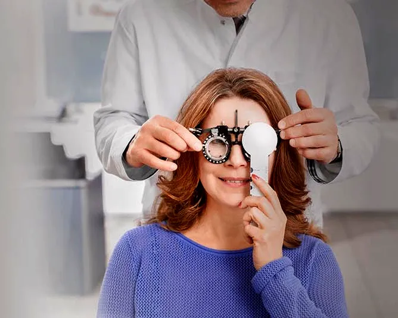
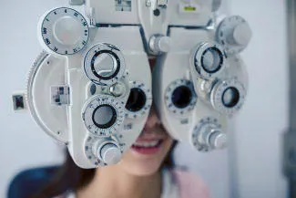
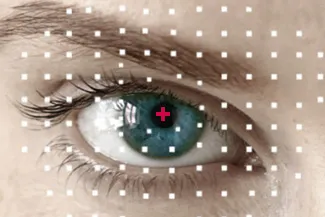
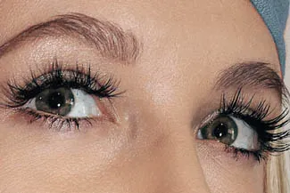

EYE CARE SERVICES FOR YOU
Our eye care center in Pryor offers a full range of eye health services to clients of all ages, from children to older adults.

Eye Emergencies, Eye Exams & More
Our optometrist in Howell Family Eyecare provides eyewear prescriptions and offers corrective laser eye surgery co-management as well. You can get in touch with our eye doctor's office to set up an appointment at your convenience and learn more about some of our key services below.
In this section
Our Eye Care Services

Comprehensive Eye Exams
Complete eye exams are not just for updating your prescription. Learn more about what your eye doctor will screen for, what to expect at your appointment, some of the advanced technology we use, and special considerations for pediatric and infant eye care.
Contact Lens Exams
A contact lens exam provides all of the measurements and testing that are required to determine if your eyes are suitable for contact lens wear. We are able to fit most patients (even hard-to-fit) and will generate your contact lens prescription.
Eye Condition Treatment
Eye conditions can range from mild to severe. While some are chronic, others may resolve on their own. Here's a short list of common eye conditions we treat, such as astigmatism, dry eye syndrome and presbyopia.
Eye Disease Management
We diagnose and manage ocular diseases such as Glaucoma, Macular Degeneration, Diabetic Retinopathy and Cataracts.

Eye Emergencies (Pink/Red Eyes)
Did you know your optometrist can help you with red eyes, pink eye, sore eyes, foreign body removal and eye emergencies?
LASIK & Refractive Surgery Co-Management
If you're ready for an alternative to glasses and/or contacts look to us for co-management of LASIK, cataract, and other ocular surgery.

Latisse
Try Latisse™ for longer, thicker lashes.
Your Eye Health
We invite you to browse through these articles to find information about vision and eye health for you and your family.
FAQ
Read the answers to frequently asked questions.